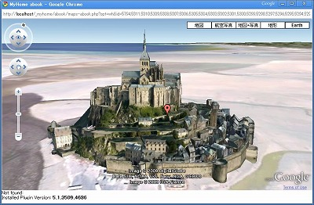
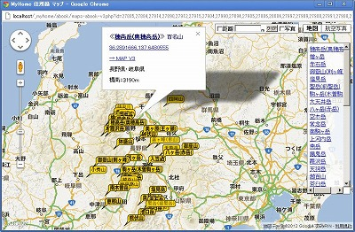
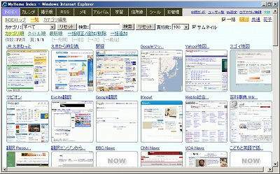
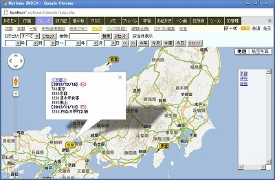
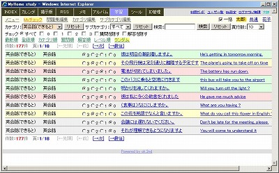

MyHome Portal 変更履歴
以下は、バージョン2.25以前の履歴です。 最新(2.26以降)の履歴に戻る
MyHome Portal Ver.2.25 (2009/11/05)
- 変更点
- CSSで、
* {margin: 0px; padding: 0px; }とすると、Google Chromeだけtextareaの左端のカーソルが見えなくなってしまう問題の対策をしました。以下をCSSに追加しました。ただし、Firefox、Safariのtextareaの左端に隙間ができます。
Google Chromeだけに有効なCSSハックをご存知の方、教えてください。
textarea { padding: 2px; _padding: 0px; /padding: 0px; } - 入力画面のレイアウトの微調整。
- textareaの横幅がブラウザによって違ってしまう問題の回避策として、colsをやめてwidthにしました。
- 変更モジュール
・account/edit-myprofile.php, newaccount.php
・calendar/input.php
・chat/index.php
・guide/input.php
・id-manager/input.php
・memo/input.php
・tools/html-text-mail.php
・style/original/common.css, tools_common.css, chat.css
MyHome Portal Ver.2.24 (2009/11/04)
- 変更点
- 住所録の都道府県フィルタで都道府県を選択した時に、分類がリセットされてしまう問題を修正。
- 変更モジュール
・abook/list-my-template.php
・__common__/include-common-mp-list.php
MyHome Portal Ver.2.23 (2009/11/02)
- 変更点
- 住所録で、日本地図で都道府県を選択すると、分類の選択がリセットされてしまう問題を修正。
- RSSの配置を横4個固定でなく、ウインドウサイズに合わせて可変にしました。
- RSSの画面表示で出力をバッファリングしないように「ob_implicit_flush();」を追加しました。
- 一覧形式のページのCSSの微調整。
- ツールの「実運用環境バックアップ」で住所録DBのバックアップが漏れていたのを修正。
- 変更モジュール
・abook/_contents-header.php, map-japan.php
・abook/list-my-template.php, list-my-template-sekaiisan.php
・rss/index.php, __define.php
・db_tool/backup-mydb.php
・style/original/mp-list.css, rss.css, abook.css
MyHome Portal Ver.2.22 (2009/11/01)
- 変更点
- サンプルデータDBの住所録の百名山データを太郎から共通に変更しました。
- 住所録のサンプルデータとして世界遺産を追加しました。
分類フィルタで、世界遺産を選択すると世界遺産専用の一覧形式に変わります。国別、UNESCOのRef番号順に並び替えもできます。
世界遺産名をクリックすると、UNESCOの解説ページが開きます。「→日本語」をクリックすると、UNESCOの解説ページをGoogleで翻訳表示します。
「マップ」で、世界遺産をGoogleマップでマーカー表示することもできます。Google Earthモード表示もできます。
Googleマップのマーカーから、UNESCOの解説ページに飛ぶこともできます。 - 「実運用サンプル」フォルダに「世界遺産.csv」を追加しています。MySQL管理ツールのCSVアップロードで、実運用データベースへ追加できます。CSVアップロードする場合は、事前に分類を追加した上で、id_accountとid_categoryのデータ部分を置き換えてご利用ください。テーブル「m_abook」にアップロードしてください。
- 世界遺産のデータは、以下のページのものを使わせていただきました。
＜google maps による世界遺産めぐり：世界遺産の緯度と経度＞
http://www.geocities.jp/heritages001/heritages.html - 世界遺産データを実運用データベースに登録した場合、世界遺産のカテゴリid_category番号を実運用定義ファイルで設定してください。
define("SEKAI_ISAN_CATEGORY_ID", 4);

-
既に前のバージョンで実運用の場合は、以下の手順で、テーブル「m_abook」の列の桁数を大きくしてください。コマンドプロンプトから以下を実行してください。MySQL管理者ユーザーrootのパスワードを「kanri789」として説明します。世界遺産データをアップロードする前に実行してください。
【サンプルDBの場合】
mysql -u root -pkanri789 use _db_abook; alter table m_abook modify c_name1 varchar(255) NOT NULL; alter table m_abook modify c_name2 varchar(255) NOT NULL; alter table m_abook modify c_yomi1 varchar(255) NOT NULL; alter table m_abook modify c_yomi2 varchar(255) NOT NULL; alter table m_abook modify c_renmei varchar(255) NOT NULL; alter table m_abook modify c_memo varchar(500) NOT NULL; exit;
【実運用DBの場合】
mysql -u root -pkanri789 use _mydb_abook; alter table m_abook modify c_name1 varchar(255) NOT NULL; alter table m_abook modify c_name2 varchar(255) NOT NULL; alter table m_abook modify c_yomi1 varchar(255) NOT NULL; alter table m_abook modify c_yomi2 varchar(255) NOT NULL; alter table m_abook modify c_renmei varchar(255) NOT NULL; alter table m_abook modify c_memo varchar(500) NOT NULL; exit;
- 変更モジュール
・abook/多数
・style/original/abook.css
・__define_common_my_sample.php
・実運用サンプル/日本百名山.csv - 追加モジュール
・実運用サンプル/世界遺産.csv
MyHome Portal Ver.2.21 (2009/10/31)
- 変更点
- 住所録の住所欄を緯度、経度で入力した場合、マップ機能で1地点あたりのスリープが不要なのに、スリープするようになっていた問題を修正。
- マップ機能で、地点数が多いとエラーになりやすいので、1地点あたりの取得タイム設定値「GETLATLNG_SLEEP_TIMEののデフォルト値を0.2秒に変更しました。
define("GETLATLNG_SLEEP_TIME", 200000); // 0.2秒 - 変更モジュール
・abook/maps-abook.php
・calendar/maps-include.php
・tools/google-maps-earth-marker.php
・__define_common_my_sample.php
MyHome Portal Ver.2.20 (2009/10/31)
- 変更点
- 住所録のマップ機能で、マーカーに氏名、住所、メモを表示するようにしました。
- 住所録のマップ機能で、住所欄に緯度、経度情報を入力した場合も表示できるようにしました。
- 住所録サンプルデータの日本百名山のデータを差し替えました。日本百名山の住所欄に緯度、経度情報を住所欄に入れています。これで、かなり正確な位置にマーカー表示できるようになりました。実運用アップロード用ファイル「日本百名山.csv」も差し替えました。
日本百名山の緯度、経度情報は、以下のページのものを使わせていただきました。
＜日本百名山一覧/深田順 NASA World Wind＞
http://www.occn.zaq.ne.jp/sohta/100list_N.htm


- 変更モジュール
・abook/do-proc.php
・実運用サンプル/日本百名山.csv - 追加モジュール
・abook/maps-abook.php, __html-my-header-maps-abook.php
MyHome Portal Ver.2.19 (2009/10/28)
- 変更点
- MySQL管理ツールのCSVインポート、Excelインポートで、サイズの大きなファイルをインポートした場合にエラーとならないように、メモリサイズ、実行時間の拡張を追加。
ini_set("memory_limit", MEMORY_LIMIT_INI_SET); ini_set("max_execution_time", MAX_EXECUTION_TIME_INI_SET);実運用定義ファイルでメモリサイズ、実行時間の変更もできます。define("MEMORY_LIMIT_INI_SET", "128M"); define("MAX_EXECUTION_TIME_INI_SET", "240"); - INDEXの一覧表示でホームページのサムネイル表示が出来るようにしました。

 - 住所録に、項目「都道府県」を追加。
- 住所録一覧に、「都道府県」フィルタを追加。
- 住所録一覧の表示順に、「都道府県順」を追加。
- 住所録に、「都道府県名セット」を追加。郵便番号から判断して都道府県名をセットします。

- 住所録に、日本地図を追加。都道府県をクリックすると、該当の都道府県の住所録一覧が表示されます。
- 住所録一覧で、都道府県選択のプルダウンでは、以下のサイトのCustom Select「jquery.cs.js」を利用しています。
ただ、「jquery.cs.js」では、selectタグをbuttonに変更しているためにonChangeが使えないので、一部カスタマイズした「jquery.cs.ok2nd.js」を使っています。強引にonClickを追加しています。
＜Custom Select - JQueryでselectタグのプルダウンをカスタマイズする＞
http://www.jextend.com/sample/cs.html
- 住所録DBに、都道府県テーブル「r_kenmei」を追加。
住所録DBに、郵便番号の頭2桁と都道府県の対応テーブル「r_zip100」を追加。都道府県名セットで使用。
既に前のバージョンで実運用中の場合は、以下の手順で、テーブル「m_abook」に列「c_kenid」の追加と、テーブル「r_kenmei」「r_zip100」の追加をしてください。MySQL管理者ユーザーrootのパスワードを「kanri789」、インストールドライブを「D:」として説明します。
【サンプルDBの場合】
mysql -u root -pkanri789 use _db_abook; ALTER TABLE m_abook ADD c_kenid varchar(10) NOT NULL AFTER c_zip2; exit; D: cd "D:\xampp\htdocs\_myhome\z_db_backup" mysql -u root -pkanri789 _db_abook < _db_abook_add_r_kenmei.txt mysql -u root -pkanri789 _db_abook < _db_abook_add_r_zip100.txt mysql -u root -pkanri789 _db_abook < create_view_db_abook.txt
【実運用DBの場合】
mysql -u root -pkanri789 use _mydb_abook; ALTER TABLE m_abook ADD c_kenid varchar(10) NOT NULL AFTER c_zip2; exit; D: cd "D:\xampp\htdocs\_myhome\z_db_backup" mysql -u root -pkanri789 _mydb_abook < _db_abook_add_r_kenmei.txt mysql -u root -pkanri789 _mydb_abook < _db_abook_add_r_zip100.txt mysql -u root -pkanri789 _mydb_abook < create_view_mydb_abook.txt
- 住所録のサンプルデータに、「日本百名山」を追加。
「マップ」機能で、ツールの「Google Maps & Earth」で日本百名山のマーカー付きの地図が表示できます。ただし、日本百名山の多くは山の名前でGoogle Mapsでマーカー表示されますが、一部の山は同名の中国等の山が表示されてしまいます。Ver.2.20で緯度、経度情報を使ったデータに変更しましたので、MyHome Portal上では、この問題は解決しています。
実運用データベースへの追加用として、「実運用サンプル」フォルダに「日本百名山.csv」を追加しています。MySQL管理ツールのCSVアップロードで、実運用データベースへ追加できます。CSVアップロードする場合は、事前に分類を追加した上で、id_accountとid_categoryのデータ部分を置き換えてご利用ください。テーブル「m_abook」にアップロードしてください。
- 変更モジュール
・__common__/include-common-mp-list.php, include-common-all.php
・index/list-my-template.php
・abook/__html-my-header.php, _contents-header.php, list.php
・abook/list-my-add-filter.php, list-my-template.php, edit-caption.php
・db_tool/__define.php, csv-import.php, excel-import.php
・style/index.css, abook.css, mp-list.css
・z_db_backup/create_view_db_abook.txt, create_view_mydb_abook.txt
・__define_common_my_sample.php - 追加モジュール
・abook/set-todofuken-by-zip.php, map-japan.php, __html-my-header-map-japan.php
・scripts/jquery.cs.js, jquery.cs.ok2nd.js
・style/map-japan.css
・実運用サンプル/日本百名山.csv
MyHome Portal Ver.2.18 (2009/10/21)
- 変更点
- アルバムで画像エフェクトをかけた場合、現在のエフェクト状態をボタンの下にテキスト表示するようにしました。
- saturationのボタン1回あたりのエフェクト度を少し下げました。
- アルバムの全画面スライドショーで、キーボード操作を可能にしました。
・[ESC]：全画面モード終了
・[→], [Page Down], [Enter], [Space]：次画像
・[←], [Page Up]：前画像
・[Tab]：10画像スキップ(リピートは無効)
・[半角/全角]：10画像前へスキップ(リピートは無効)
・[Home]：先頭画像へスキップ
・[End]：最後画像へスキップ
・[A]：自動モード On/Off
・[R]：リピート On/Off
・[W]：壁紙モード On/Off
- 変更モジュール
・photo/index.php, slide.php
MyHome Portal Ver.2.17 (2009/10/17)
- 変更点
- INDEXトップページでカテゴリ表示順が同じものが複数ある場合、１つのカテゴリのリンクが分かれて表示されてしまう不具合を修正。sort orderの指定ミスでした。
- ログインし直した時に、HTMLを含まないページ(chat/read-min.phpなど)に遷移してしまうことがある不具合を修正。
- 変更モジュール
・index/top.php
・account/__logincheck.php
・chat/read.php, read-min.php, write.php
・todo/read.php, read-min.php, write.php, update.php, delete.php, priority_updown.php
MyHome Portal Ver.2.16 (2009/10/17)
- 変更点
- MySQL管理ツールに、CSVファイルからデータベースへのアップロード機能を追加。デリミッタ(区切り文字)はカンマ( , )、文字列の囲みはダブルクォーテーション(")のみサポート。文字コードは、Shift-JIS、UTF-8、EUCなど自動判別します。
- MySQL管理ツールのExcelシートアップロードにエラー処理の不備があったので修正。
- アルバムのスライドショーに、画像エフェクト機能を追加。
画像エフェクトには、JavaScriptライブラリ「Pixastic」を使用しています。
http://www.pixastic.com/lib/
エフェクトの種類は、sepia、posterize、saturation、sharpen、blur、contrast、lighten、glow、red、green、blue、desaturate、solarizeです。
desaturate、solarize以外は、ボタンを複数回押すとエフェクトの効果が上がっていきます。
複数のエフェクトを組み合わせることができます。
エフェクトを組み合わせると、処理に時間がかかります。多くのエフェクトを組み合わせると、ブラウザがハングアップします。
エフェクトは、スライドショーで次の画像にも反映されます。
全画面スライドショーにも、反映されます。壁紙タイプの場合は、反映されません。
IEでは、この機能は使えません。
- 変更モジュール
・db_tool/mysql-database.php, mysql-table-list.php, excel-import.php
・photo/index.php, slide.php
・__define_common_my_sample.php - 追加モジュール
・db_tool/csv-import.php, __define_csv-import.php
MyHome Portal Ver.2.15 (2009/10/12)
- 変更点
- アルバムやファイルマネージャーで、ネットワークドライブが使えない問題の解決策はみつかっていませんが、UNC表記(例：\\HostName\Folder)であれば可能なことが判明。しかし、アルバムやファイルマネージャーでUNC表記を使った時にフォルダ移動すると//が/になってしまう不具合があったので修正。
UNC表記を使う場合、サーバ名だけではダメで、必ずディレクトリの最上位階層も含めて指定する必要があります。 - ユーザーによるアカウント登録ページで、CAPTCHA(認証用絵文字コード)を使用しない設定を可能に。定義ファイルで設定してください。
- アルバムの全画面スライドショーに壁紙タイプを追加。画像をタイル形式で並べて表示します。

- 変更モジュール
・__common__/include-common-all.php, __define_common.php
・tools/file-manager.php, code-file-view.php, html-get-url-img.php, index.php
・db_tool/backup-mydb.php
・photo/index.php, slide.php
・account/newaccount-confirm.php, __define.php, __include-login.php
・setup-sample.php, __define_common_my_sample.php
MyHome Portal Ver.2.14 (2009/10/03)
- 変更点
- カレンダーのスケジュール入力画面において、textareaへの文字の色付などのタグ挿入で、ChromeとSafariでは文字列を右から左に選択した場合、正しい位置にタグ挿入できなかったのを修正。
textareaの文字列選択によるタグ挿入のJavaScriptを、textarea.jsから、getRange_in_textarea.jsに変更。
getRange_in_textarea.jsは、Archiva.jpの以下のものを使わせていただきました。
http://archiva.jp/web/javascript/getRange_in_textarea.html - チャットでURLを入力した場合、Aタグ挿入しリンク表示するようにしました。タグテキストは短く表示します。
- ツールに「縦計だけの表計算」を追加。縦計だけのシンプルな表計算シートです。各セルには、()付きの数式の入力もできます。数式の計算はJavaScriptのeval()を使っていますので、JavaScriptの数学関数(Math)も使えます。数字以外は、JavaScriptとして評価して実行しますので、ご注意ください。例えば、「alert(Date());」なども実行できます。
- 変更モジュール
・calendar/input.php
・chat/read.php, read-min.php
・__common__/include-common-all.php, include-common-html.php - 追加モジュール
・tools/calc.php
・scripts/getRange_in_textarea.js
MyHome Portal Ver.2.13 (2009/09/26)
- 変更点
- 住所録のPDF葉書宛名書きの印刷フォントをゴシック体/明朝体から選択ができるようにしました。住所録定義ファイル__define_abook_pdf_my.phpで設定してください。
- 住所録でローマ数字(ⅠⅡⅢⅣⅤ)を表示するために、PEAR/Numbers/Roman.phpを使っていたのを使わない方法に変更。なおかつ、環境依存文字のローマ数字自体を使わずに、I、II、III、IV、Vで代用。
- ⅠⅡⅢⅣⅤのチェックボックスを、見出しを定義しているもののみ表示するように変更。見出しの定義は、「チェック項目見出し編集」で行ってください。
- MyHome Portal全体のアンカータグのリンク文字色を青色から変更。
- (簡易) 預貯金管理のkakeibo/list.phpのテーブル指定が、v_keiyakuShaになっていたのを、v_keiyakushaに修正。Linux環境で動作可能にするため。
- ツールに「Photoshop-like JavaScript Color Picker」追加。
Powered by http://johndyer.name/post/2007/09/PhotoShop-like-JavaScript-Color-Picker.aspx - 変更モジュール
・abook/以下一式
・kakeibo/list.php
・style/original/common.css, tools_common.css, abook.css
・__common__/include-common-all.php
・__define_abook_pdf_my_sample.php - 追加モジュール
・tools/colorpicker.php
・tools/refresh_web/以下一式
MyHome Portal Ver.2.12 (2009/09/20)
- 変更点
- 新コンテンツ「住所録」を追加。選択した名簿の電子メール宛名一覧作成、Google Maps & Earthマップ作成、PDF葉書宛名書き等ができます。


- My設定のアカウント情報に、〒番号、住所2を追加しました。
- 既に前のバージョンで実運用中の場合は、「住所録」を追加するために、以下の手順により環境設定してください。
【サンプルモード】
まず、サンプルモード用データベース「_db_abook」を登録します。
コマンドプロンプトから以下を実行してください。以下、MySQL管理者ユーザーrootのパスワードを「kanri789」として説明します。また、インストールディレクトリをDドライブとして説明します。
mysql -u root -pkanri789 create database _db_abook; exit; d: cd "D:\xampp\htdocs\_myhome\z_db_backup" mysql -u root -pkanri789 _db_abook < _db_abook.bk.txt mysql -u root -pkanri789 _db_abook < create_view_db_abook.txt mysql -u root -pkanri789 GRANT SELECT,INSERT,UPDATE,DELETE ON _db_abook.* TO myhome@localhost; FLUSH PRIVILEGES; exit;
【実運用モード】
実運用定義ファイル__define_common_my.phpに、実運用データベースの定義を追加してください。
__define_common_my_sample.phpを参考にしてください。
define("_DB_SCHEMA_abook", _mydb_abook);コンテンツ定義ファイル__define_contents_my.phpに、コンテンツの追加をしてください。
__define_contents_my_sample.phpを参考にしてください。
$navi_item[] = array("href"=>"abook/", "query"=>"", "name"=>"住所録");データベース「_db_abook」をコピーして、実運用データベース「_mydb_abook」を作成します。
MySQLを一旦停止します。XAMPPコントロールパネルを使って停止してください。
mkdir D:\xampp\mysql\data\_mydb_abook copy D:\xampp\mysql\data\_db_abook\* D:\xampp\mysql\data\_mydb_abook
MySQLを再起動します。XAMPPコントロールパネルで「開始」を押してください。コマンドプロンプトから以下を実行してください。d: cd "D:\xampp\htdocs\_myhome\z_db_backup" mysql -u root -pkanri789 _mydb_abook < create_view_mydb_abook.txt mysql -u root -pkanri789 GRANT SELECT,INSERT,UPDATE,DELETE ON _mydb_abook.* TO myhome@localhost; FLUSH PRIVILEGES; exit;
サンプルデータベースからコピーされた住所録をクリアします。mysql -u root -pkanri789 use _mydb_abook; truncate table m_abook; truncate table m_category; truncate table m_check_caption; exit;
- 既に前のバージョンで実運用中の場合は、MySQLデータベース_db_account、_mydb_accountのテーブル「m_account」に、列「c_home_address2」を追加してください。 コマンドプロンプトから以下を実行してください。MySQL管理者ユーザーrootのパスワードを「kanri789」として説明します。
【サンプルモードDB】
mysql -u root -pkanri789 use _db_account; ALTER TABLE m_account ADD c_home_address2 varchar(200) NOT NULL; ALTER TABLE m_account ADD c_zip1 varchar(10) NOT NULL; ALTER TABLE m_account ADD c_zip2 varchar(10) NOT NULL; exit; d: cd "D:\xampp\htdocs\_myhome\z_db_backup" mysql -u root -pkanri789 _db_account < create_view_db_account.txt
【実運用DB】
mysql -u root -pkanri789 use _mydb_account; ALTER TABLE m_account ADD c_home_address2 varchar(200) NOT NULL; ALTER TABLE m_account ADD c_zip1 varchar(10) NOT NULL; ALTER TABLE m_account ADD c_zip2 varchar(10) NOT NULL; exit; d: cd "D:\xampp\htdocs\_myhome\z_db_backup" mysql -u root -pkanri789 _mydb_account < create_view_mydb_account.txt
- 既に前のバージョンで実運用中の場合は、実運用定義ファイル__define_common_my.phpに以下を追加してください。
define("ATTACH_FILE_FOLDER_abook", "../../_attach/abook/"); - PDF作成には、FPDFを利用しています。
http://www.fpdf.org/
・FPDF
・MBFPDF
・Rotations
http://www.setasign.de/products/pdf-php-solutions/fpdi/
・FPDI
・FPDF_TPL
- PDF葉書宛名書きでは、以下のRapid Expressで公開されているpdf.inc.phpを利用させてもらっています。文字列の長さに合わせてフォントサイズの調整もしてくれる優れものです。
Rapid Express：PDF作成ライブラリ(FPDF+FPDI+MBFPDF+Rotations)
http://wp.rapidexp.com/2009/01/fpdf/
- IE以外のChrome、Safariなどのブラウザで、INDEXトップが「リンク先を新しいウインドウで開く」設定になっている場合、先頭の(Google)検索ボタンで開いたウインドウを閉じてしまうと、2回目以降、ウインドウが開かない不具合を修正。(formタグのtarget指定では、同様の不具合が発生する模様)
- カレンダーの今日が休みの場合、日付の色が赤色にならなかったのを修正。
- 変更モジュール
・account/list-user.php, myprofile.php, edit-myprofile.php
・index/__define_index_search.php
・__define_index_search_my_google.php, __define_index_search_my_yahoo.php
・calendar/_my_calendar.php
・style/original/calendar.css
・__common__/include-common-mp-list.php - 追加モジュール
・abook/以下一式
・pdf/以下一式 (FPDF関係ライブラリを含む)
・style/original/abook.css
・__define_abook_pdf_my_sample.php
MyHome Portal Ver.2.11 (2009/09/16)
- 変更点
- INDEX、メモ、学習、(簡易) 預貯金管理 、ユーザ一覧に、「一括修正/追加/削除」とは別に、一覧形式の追加専用「一括追加」を追加しました。
- 変更モジュール
・index/list.php
・memo/list.php
・study/list.php
・kakeibo/list.php
・account/list-user.php
・__common__/include-common-mp-list.php
MyHome Portal Ver.2.10 (2009/09/12)
- 変更点
- カレンダー入力画面に、リンク先(URL)挿入ボタン「Ｌ」を追加しました。文字列を<a href=..></a>で囲みます。

- 変更モジュール
・calendar/input.php
MyHome Portal Ver.2.09 (2009/09/12)
- ダウンロードファイル名は「_myhome_209_1.zip」です。「_myhome_209.zip」には不具合がありました。
- 変更点
- ツール「(簡易) 預貯金管理」の「預貯金一覧」に検索フィルタ「解約状態」を追加。
- 変更モジュール
・kakeibo/list.php - 追加モジュール
・kakeibo/list-my-add-filter.php
MyHome Portal Ver.2.08 (2009/09/11)
- 変更点
- トップINDEXの「●」ボタンの検索を、「Google Maps & Earth」から「Google Maps & Earth (複数地点/マーカー付)」に変更。
- トップINDEXの検索で、複数キーワードの区切りスペースの全角から半角への変換が1つのみしか対処していなかった点を修正。
- カレンダーの「マップ」およびツールの「Google Maps & Earth(...)」のマップの高さサイズをディスプレイのサイズを判断して多少調整するようにしました。
- 変更モジュール
・index/__define_index_search.php
・calendar/maps.php, maps-alone.php
・calendar/maps-include.php, __html-my-header-maps.php, __html-my-header-maps-alone.php
・tools/google-maps-earth.php, google-maps-earth-marker.php, google-maps-earth-marker-uncertain.php
・__define_index_search_my_google, __define_index_search_my_yahoo.php
MyHome Portal Ver.2.07 (2009/09/09)
- 変更点
- カレンダーの「マップ」と、ツールの「Google Maps & Earth(複数地点/マーカー付)」のロジック修正。
- 表示地点が多い場合、全ての地点が表示されない点を改善。(取得できない地点は、タイミングによって不定です。)
サーバー側でURL引数によるMaps APIジオコーダを使って緯度経度を取得する方式に変更。
ただ、この方式にしても、取得地点が多いとタイミングによって取得できない場合あり。1地点取得毎に0.1秒程度時間遅延すると取得できる頻度が上がるため、ロジックに時間遅延を入れています。よって地点が多いと地図が表示されるまで時間がかかります。緯度経度情報が取得できなかった地名をウインドウの下にNot foundとして表示します。
＜参考：サーバー側のスクリプトを直接使用して、Maps APIジオコーダにアクセス＞
http://q.hatena.ne.jp/1194229236
http://code.google.com/intl/ja/apis/maps/documentation/services.html#Geocoding_Direct
＜参考：イベントリスナでクロージャを使用＞
http://blog.hansode.org/archives/51763965.html
http://code.google.com/intl/ja/apis/maps/documentation/mapplets/events.html#Event_Closures - ロジック修正前の「Google Maps & Earth(複数地点/マーカー付)」を不確実版として残しています。地点数が多い場合、すべてを表示できない可能性が高いです。
- 変更モジュール
・calendar/maps-include.php, __html-my-header-maps.php, __html-my-header-maps-alone.php
・tools/google-maps-earth-marker.php
・__common__/include-common-all.php - 追加モジュール
・tools/google-maps-earth-marker-uncertain.php
MyHome Portal Ver.2.06 (2009/09/06)
- 変更点
- カレンダーの一覧、マップの検索フィルタの不具合を修正。
- 変更モジュール
・calendar/list-my-add-filter.php, _contents-header.php, maps-include.php
MyHome Portal Ver.2.05 (2009/09/06)
- 変更点
- カレンダーの「マップ」とツールの「Google Maps & Earth(複数地点/マーカー付)」のロジック修正。マーカー表示地点が多いと地図を表示できなくなる不具合を修正。
- カレンダーに「マップ(別窓)」を追加。マップの全画面タイプです。別ウインドウで開きます。
- 変更モジュール
・calendar/maps.php, __html-my-header-maps.php, _contents-header.php
・tools/google-maps-earth-marker.php
・__common__/include-common-html.php, include-common-all.php - 追加モジュール
・calendar/maps-alone.php, maps-include.php, __html-my-header-maps-alone.php
MyHome Portal Ver.2.04 (2009/09/04)
- 変更点
- カレンダーにGoogle Maps APIを使ったマップ機能を追加しました。
カレンダーに登録されている場所をGoogleマップでマーカー表示します。
件名に地図チェックが付いているスケジュールが対象です。
検索条件にあった地点全てを表示します。去年旅行で行ったところの一覧地図といった感じで使えます。
同じ場所が複数ある場合、マーカーは１つにまとめます。
マーカーをクリックすると、スケジュールの日付とスケジュール内容を表示します。
Google Earth 表示もできます。
 - カレンダーの一覧表示の週間指定で、月を跨った場合、ただしく検索されない不具合を修正しました。
- 定義ファイルの定義名の英語の綴りが間違っていたのを、修正しました。
define("SCHEDULE_VIEW_FRAME_COLOR_index", "#228b22"); // スケジュール表示 枠カラー define("SCHEDULE_VIEW_DAY_index", 3); // スケジュール表示 日数 - ツールに「Google Maps & Earth (複数地点/マーカー付) 」を追加しました。
Google Maps & Earthのマーカー付きのタイプです。
複数地点をスペースで区切って入力できます。

- 変更モジュール
・calendar/_contents-header.php, list-my-add-filter.php, list-my-template.php
・__common__/include-common-all.php, include-common-html.php
・tools/google-maps-earth.php
・__define_common_my_sample.php - 追加モジュール
・calendar/maps.php, __html-my-header-maps.php
・tools/google-maps-earth-marker.php, index.php
MyHome Portal Ver.2.03 (2009/09/03)
- 変更点
- カレンダーの件名でも、Googleマップの地図検索と経路検索と連携ができるようにしました。スケジュール入力画面の件名欄右のチェックボックス「地図」にチェックを入れると、カレンダー月間表示に「→地図」「→経路」のリンクが表示され、クリックするとGoogleマップで検索します。

- 既に2.02以前のバージョンで実運用中の場合は、MySQLデータベース_db_calendar、_mydb_calendarのテーブル「m_schedule」に、列「c_map」を追加してください。 コマンドプロンプトから以下を実行してください。MySQL管理者ユーザーrootのパスワードを「kanri789」として説明します。
【サンプルモードDB】
mysql -u root -pkanri789 use _db_calendar; ALTER TABLE m_schedule ADD c_map int unsigned NOT NULL; exit; d: cd "D:\xampp\htdocs\_myhome\z_db_backup" mysql -u root -pkanri789 _db_calendar < create_view_db_calendar.txt
【実運用DB】
mysql -u root -pkanri789 use _mydb_calendar; ALTER TABLE m_schedule ADD c_map int unsigned NOT NULL; exit; d: cd "D:\xampp\htdocs\_myhome\z_db_backup" mysql -u root -pkanri789 _mydb_calendar < create_view_mydb_calendar.txt
- アルバムの全画面表示で、写真のページ数を表示するようにしました。
- ツールの「ファイル暗号化/復号化＋ファイルマネージャー」を、「(簡易)ファイルマネージャー(暗号化/復号化付き)」に名称変更。
- ツール「ファイルマネージャー」に、unZIP機能追加。(unZipは、元のタイムスタンプは保存されません。)
- ツール「ファイルマネージャー」に、フォルダコピー、リネーム、削除機能追加。
- ツール「ファイルマネージャー」に、ファイルダウンロード機能追加。ファイル名クリックでダウンロードします。

- 変更モジュール
・calendar/input.php, _my_calendar.php
・z_db_backup/create_view_db_calendar.txt, create_view_mydb_calendar.txt
・photo/slide.php
・tools/index.php, code-file-view.php
・tools/file-manager.php
・tools/file-rename.php, file-copy.php, file-delete.php, file-cipher.php
・__common__/include-common-all.php - 追加モジュール
・tools/folder-copy.php, folder-delete.php, folder-rename.php
・tools/file-unzip.php, file-download.php
MyHome Portal Ver.2.02 (2009/08/30)
- 変更点
- アルバムに全画面表示タイプのスライドショーを追加。
F11キーと組み合わせると、パソコン画面一杯でスライドショーができます。
左右の＜＞キーで前後の画像に移動できます。
画面下の×クリックで通常のスライド画面に戻ります。
オートプレイやオートプレイの繰り返しもできます。

- 「Google Maps & Earth」のcssに「overflow: hidden;」を追加。
- 変更モジュール
・photo/index.php
・tools/google-maps-earth.php - 追加モジュール
・photo/slide.php
MyHome Portal Ver.2.01 (2009/08/29)
- 変更点
- ツールに「Google Maps & Earth」を追加。
Google Maps API とGoogle Earth APIを組み合わせたツールです。
検索した地図を、Google Earth APIを使って3D立体表示にできます。
3D地図を表示するためには、Google Earth プラグインをインストールする必要があります。
http://code.google.com/intl/ja/apis/earth/
url引数に、場所とズーム倍率を指定できるようにもしています。
http://localhost/_myhome/tools/google-maps-earth.php?addr=%e6%9d%b1%e4%ba%ac%e3%82%bf%e3%83%af%e3%83%bc&zoom=18 - Google MAPS APIキーは、http://code.google.com/apis/ajax/playground/のサンプルのものを記述しています。このツールをインターネット上で使う場合は、Google MAPS APIキーを取得して、そのキーを使用願います。
- INDEXトップページに、このGoogle Maps & Earth検索用ボタンを追加。
- 変更モジュール
・index/__define_index_search.php
・tools/index.php
・__define_common_my_sample.php - 追加モジュール
・tools/google-maps-earth.php

MyHome Portal Ver.2.00 (2009/08/28)
- 変更点
- Ver.1.00リリースから約1年ということで、Ver.2.00としました。
- メインコンテンツとして「学習」を追加。任意の問題集を登録して、自学習に使えます。英会話の英文と日本文を登録するなどして、ご利用ください。ユーザー各自の理解度を記録できます。Ajaxにより、ラジオボタンをクリックするだけでデータベースに記録できます。質問や解答をそれぞれ隠すこともできます。質問や解答の上にマウスを重ねると、それぞれ解答と質問がツールチップ表示されます。表示順序をランダムにすることもできます。
 - 問題集のサンプルデータとして、以下の2つを使わせていただきました。
＜できるといいな英会話(Excel版)＞
http://www.vector.co.jp/soft/win95/edu/se143894.html
＜「実践例蓄積型」の英会話集＞
http://www5f.biglobe.ne.jp/~newseastory/ - 問題集を、MySQL管理ツールを使って、Excelシートから一括アップロードすることもできます。
- 既にMyHome Portalをご利用の方は、「学習」を追加するために、以下の手順により環境設定してください。
- 【サンプルモード】
まず、サンプルモード用データベース「_db_study」を登録します。
コマンドプロンプトから以下を実行してください。以下、MySQL管理者ユーザーrootのパスワードを「kanri789」として説明します。また、インストールディレクトリをDドライブとして説明します。
mysql -u root -pkanri789 create database _db_study; exit; d: cd "D:\xampp\htdocs\_myhome\z_db_backup" mysql -u root -pkanri789 _db_study < _db_study.bk.txt mysql -u root -pkanri789 _db_study < create_view_db_study.txt mysql -u root -pkanri789 GRANT SELECT,INSERT,UPDATE,DELETE ON _db_study.* TO myhome@localhost; FLUSH PRIVILEGES; exit;
【実運用モード】
実運用定義ファイル__define_common_my.phpに、実運用データベースの定義を追加してください。
__define_common_my_sample.phpを参考にしてください。
define("_DB_SCHEMA_study", _mydb_study);コンテンツ定義ファイル__define_contents_my.phpに、コンテンツの追加をしてください。
__define_contents_my_sample.phpを参考にしてください。
$navi_item[] = array("href"=>"study/", "query"=>"", "name"=>"学習");データベース「_db_study」をコピーして、実運用データベース「_mydb_study」を作成します。
MySQLを一旦停止します。XAMPPコントロールパネルを使って停止してください。
mkdir D:\xampp\mysql\data\_mydb_study copy D:\xampp\mysql\data\_db_study\* D:\xampp\mysql\data\_mydb_study
MySQLを再起動します。XAMPPコントロールパネルで「開始」を押してください。コマンドプロンプトから以下を実行してください。d: cd "D:\xampp\htdocs\_myhome\z_db_backup" mysql -u root -pkanri789 _mydb_study < create_view_mydb_study.txt mysql -u root -pkanri789 GRANT SELECT,INSERT,UPDATE,DELETE ON _mydb_study.* TO myhome@localhost; FLUSH PRIVILEGES; exit;
サンプルデータベースからコピーされたMyチェックをクリアします。mysql -u root -pkanri789 use _mydb_study; truncate table m_mycheck; exit;
サンプルデータベースからコピーされたサンプル問題集一式も削除する場合、次を実行してください。mysql -u root -pkanri789 use _mydb_study; truncate table m_study; truncate m_category; truncate m_category2; exit;
- z_db_backup以下のファイルが、ブラウザからダウンロードできないように、.htaccessを追加。
- デザインの微調整。
- 変更モジュール
・__common__/__define_contents.php, include-common-mp-list.php
・_style/original/common.css
・___define_common_my_sample.php, __define_contents_my_sample.php
・_setup-sample.php
・_db_backup.txt.php, db_restore.txt.php
・db_tool/backup-mydb.php - 追加モジュール
・study/以下一式
・scripts/jquery.cookie.js
・_style/original/study.css
・_z_db_backup/_db_study.bk.txt, create_view_db_study.txt, create_view_mydb_study.txt
・z_db_backup/.htaccess